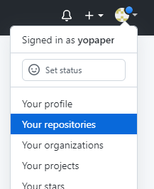
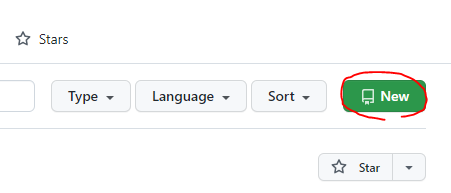
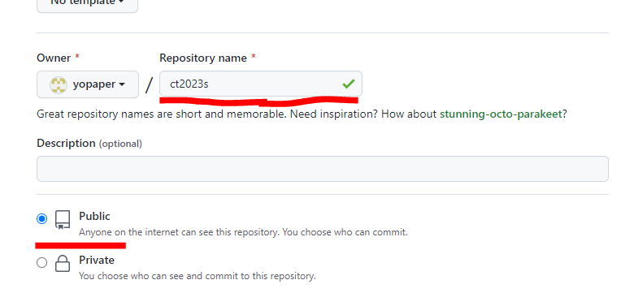
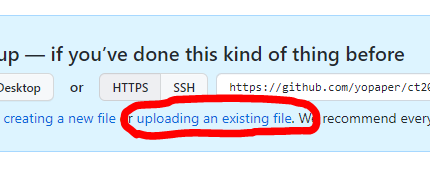
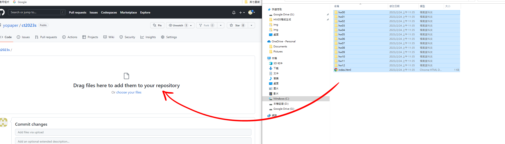
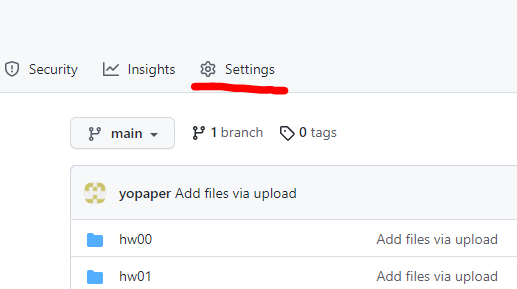
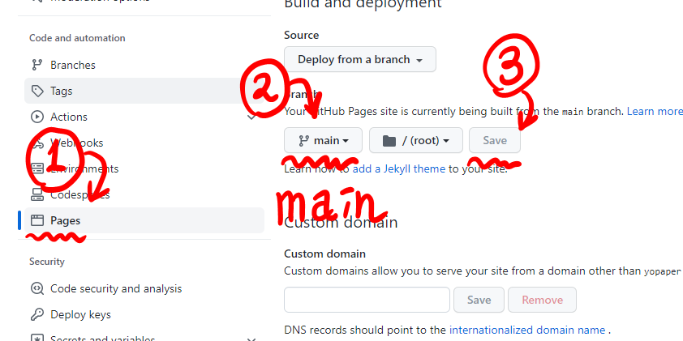

建立專案

登入後右上角的圖示打開 -> Your Repositories

點擊 New 按鈕

專案名稱一定要取為
ct2023s
(全部半形小寫字母)
並選擇 Public, 建立
之後下載網站模板, 並將其解壓縮

回到網站, 選擇 "uploading an existing file" 的選項

打開解壓縮後的資料夾, 把裡面所有檔案及資料拖至上傳區
(注意! 不是整個ct2023s-main資料夾, 而是裡面的 hw00、hw01… 及index.html)
之後建立
請確定是否目前網頁的網址是:
https://github.com/你的帳號/ct2023s
(https:// 不顯示是正常的)

開啟上方的 "Settings"

左側的Pages -> 把中間的 None 改成 main -> Save